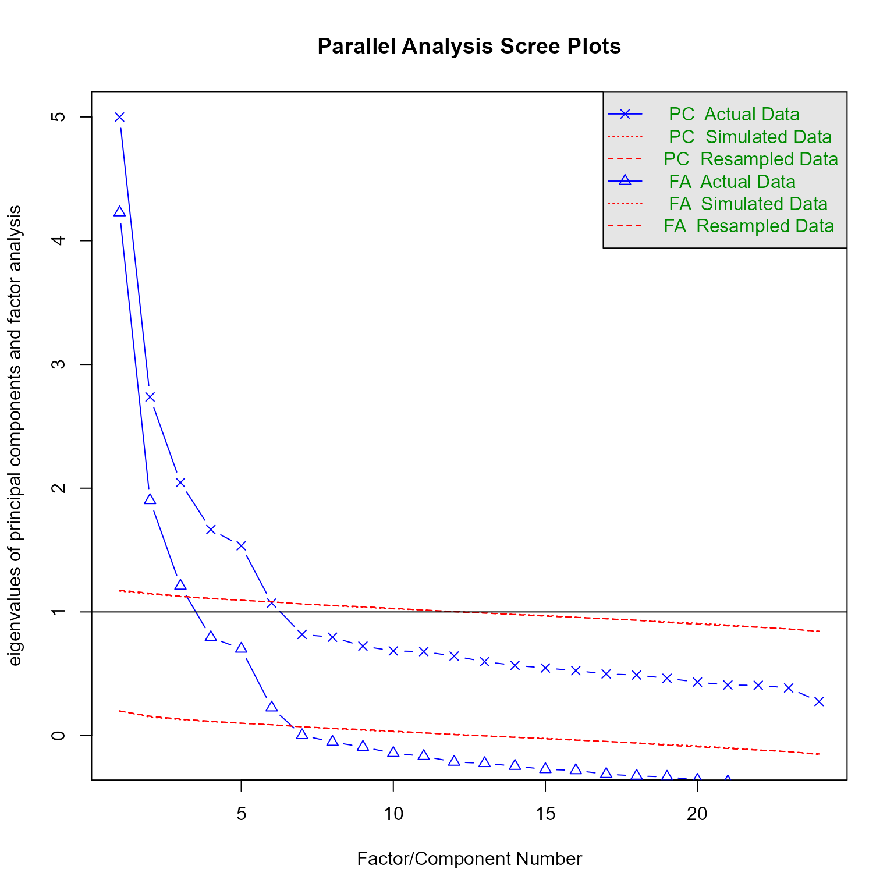

if (!require("tidyverse")) install.packages("tidyverse")
if (!require("GPArotation")) install.packages("GPArotation")
if (!require("psych")) install.packages("psych")
if (!require("psych")) install.packages("easystats")Load Packages
The following code will install the tidyverse, GPArotation, and psych packages if they are not installed already.
library(tidyverse)
library(GPArotation)
library(psych)
library(easystats)Data Import
Let’s import a version of a data set from the psych package altered to make it suitable for an assignment like this. It consists of personality test items from the International Personality Item Pool (Goldberg, 1999). The data were collected as a part of the SAPA project (Revelle, 2015).
Goldberg, L. R. (1999). A broad-bandwidth, public domain, personality inventory measuring the lower-level facets of several five-factor models. Personality Psychology in Europe, 7(1), 7–28.
Revelle, W. (2015). Psych: Procedures for psychological, psychometric, and personality research. Northwestern University. http://CRAN.R-project.org/package=psych
d_bfi <- read_csv("https://github.com/wjschne/EDUC5529/raw/master/HW4_BFI.csv")Here are the personality items:
| Items |
|---|
| Am indifferent to the feelings of others. |
| Inquire about others' well-being. |
| Know how to comfort others. |
| Love children. |
| Make people feel at ease. |
| Am exacting in my work. |
| Continue until everything is perfect. |
| Do things according to a plan. |
| Do things in a half-way manner. |
| Waste my time. |
| Don't talk a lot. |
| Find it difficult to approach others. |
| Know how to captivate people. |
| Make friends easily. |
| Take charge. |
| Get angry easily. |
| Get irritated easily. |
| Have frequent mood swings. |
| Often feel blue. |
| Panic easily. |
| Am full of ideas. |
| Carry the conversation to a higher level. |
| Spend time reflecting on things. |
| Will not probe deeply into a subject. |
How many factors to extract?
In one line of code, we can get information we need to apply the Kaiser-Guttman rule, the scree plot rule, and parallel analysis. For the personality data:
fa.parallel(d_bfi)
Parallel analysis suggests that the number of factors = 6 and the number of components = 5 - There are 6 eigenvalues above 1 (from the PC series with the Xs), so the Kaiser-Guttman rule says that we should select 6 factors.
- There are 6 eigenvalues above the scree in the PC series. So the scree plot rule says to extract 6 factors.
- The principal components version of parallel analysis says to extract 5 factors. This method works best if the factors have weak correlations. Thus, if the factors are weakly correlated (< 0.3 or so), we should extract 5 factors.
- The factor analysis version of parallel analysis says to extract 6 factors (the FA series with the triangles). If the factors are strongly correlated (> 0.3 or so), we should extract 6 factors.
Here is the same plot, but rendered to be more easily interpreted:
Conducting Exploratory Factor Analysis
There are many variants of factor analysis and each has its advantages and disadvantages. Remember, EFA is called “exploratory” for a reason. With EFA, there are no firm answers that we can stand behind forever and always and in every situation.
Let’s extract 5 factors and then 6 factors. We are going to use the most traditional method of EFA by setting the factor method fm to “pa” (principal-axis factor analysis). By default, the most common method of rotation is used: oblimin rotation.
fa(d_bfi, nfactors = 5, fm = "pa") %>%
parameters() # Rotated loadings from Factor Analysis (oblimin-rotation)
Variable | PA2 | PA1 | PA3
-------------------------------------------------------------------------
Am indifferent to the feelings of others. | 0.19 | -0.16 | 0.07
Inquire about others' well-being. | -7.83e-03 | 0.01 | 0.07
Know how to comfort others. | -0.01 | -0.10 | 0.02
Love children. | -0.03 | -0.07 | 0.19
Make people feel at ease. | -0.11 | -0.21 | -1.65e-03
Am exacting in my work. | 0.05 | 0.04 | 0.55
Continue until everything is perfect. | 0.13 | 0.10 | 0.66
Do things according to a plan. | 0.04 | 0.06 | 0.56
Do things in a half-way manner. | 0.16 | 0.01 | -0.61
Waste my time. | 0.17 | 0.16 | -0.55
Don't talk a lot. | -0.07 | 0.55 | 0.10
Find it difficult to approach others. | 0.09 | 0.67 | -0.02
Know how to captivate people. | 0.06 | -0.38 | -4.09e-03
Make friends easily. | 0.03 | -0.57 | 0.02
Take charge. | 0.13 | -0.40 | 0.27
Get angry easily. | 0.83 | -0.11 | 6.26e-03
Get irritated easily. | 0.78 | -0.04 | 0.01
Have frequent mood swings. | 0.71 | 0.10 | -0.04
Often feel blue. | 0.46 | 0.39 | -0.14
Panic easily. | 0.49 | 0.20 | -0.01
Am full of ideas. | -0.04 | -0.06 | 0.08
Carry the conversation to a higher level. | -0.03 | -0.10 | 0.02
Spend time reflecting on things. | 0.08 | 0.36 | -0.02
Will not probe deeply into a subject. | 0.16 | -0.11 | -0.04
Variable | PA5 | PA4 | Complexity | Uniqueness
-------------------------------------------------------------------------------------------
Am indifferent to the feelings of others. | -0.43 | -9.00e-03 | 1.78 | 0.81
Inquire about others' well-being. | 0.65 | 0.03 | 1.03 | 0.55
Know how to comfort others. | 0.67 | 0.03 | 1.05 | 0.47
Love children. | 0.45 | -0.15 | 1.63 | 0.72
Make people feel at ease. | 0.53 | 0.07 | 1.45 | 0.54
Am exacting in my work. | -0.04 | 0.17 | 1.24 | 0.66
Continue until everything is perfect. | 0.07 | 0.07 | 1.17 | 0.55
Do things according to a plan. | 0.09 | -0.06 | 1.11 | 0.68
Do things in a half-way manner. | 0.02 | -1.44e-03 | 1.14 | 0.56
Waste my time. | -8.28e-03 | 0.12 | 1.46 | 0.57
Don't talk a lot. | -0.10 | -0.11 | 1.26 | 0.65
Find it difficult to approach others. | -0.07 | -0.07 | 1.08 | 0.45
Know how to captivate people. | 0.23 | 0.34 | 2.68 | 0.55
Make friends easily. | 0.30 | -0.03 | 1.54 | 0.48
Take charge. | 0.04 | 0.25 | 2.85 | 0.59
Get angry easily. | -0.09 | -0.05 | 1.07 | 0.33
Get irritated easily. | -0.09 | 0.02 | 1.03 | 0.40
Have frequent mood swings. | 0.08 | 0.02 | 1.08 | 0.45
Often feel blue. | 0.08 | 0.08 | 2.28 | 0.51
Panic easily. | 0.21 | -0.13 | 1.87 | 0.66
Am full of ideas. | -0.03 | 0.55 | 1.08 | 0.66
Carry the conversation to a higher level. | 0.04 | 0.64 | 1.06 | 0.53
Spend time reflecting on things. | 0.13 | 0.40 | 2.29 | 0.73
Will not probe deeply into a subject. | 0.06 | -0.47 | 1.39 | 0.77
The 5 latent factors (oblimin rotation) accounted for 42.19% of the total variance of the original data (PA2 = 10.50%, PA1 = 8.76%, PA3 = 8.38%, PA5 = 8.32%, PA4 = 6.22%).The amount of output can be overwhelming. Let’s simplify it by sorting the output by the strongest loadings in each factor and removing all loadings smaller than .2.
fa(d_bfi, nfactors = 5, fm = "pa") %>%
# WJSmisc::plot_loading()
parameters(sort = TRUE, threshold = .2) # Rotated loadings from Factor Analysis (oblimin-rotation)
Variable | PA2 | PA1 | PA3 | PA5
------------------------------------------------------------------------
Get angry easily. | 0.83 | | |
Get irritated easily. | 0.78 | | |
Have frequent mood swings. | 0.71 | | |
Panic easily. | 0.49 | | | 0.21
Often feel blue. | 0.46 | 0.39 | |
Find it difficult to approach others. | | 0.67 | |
Make friends easily. | | -0.57 | | 0.30
Don't talk a lot. | | 0.55 | |
Take charge. | | -0.40 | 0.27 |
Know how to captivate people. | | -0.38 | | 0.23
Continue until everything is perfect. | | | 0.66 |
Do things in a half-way manner. | | | -0.61 |
Do things according to a plan. | | | 0.56 |
Waste my time. | | | -0.55 |
Am exacting in my work. | | | 0.55 |
Know how to comfort others. | | | | 0.67
Inquire about others' well-being. | | | | 0.65
Make people feel at ease. | | -0.21 | | 0.53
Love children. | | | | 0.45
Am indifferent to the feelings of others. | | | | -0.43
Carry the conversation to a higher level. | | | |
Am full of ideas. | | | |
Will not probe deeply into a subject. | | | |
Spend time reflecting on things. | | 0.36 | |
Variable | PA4 | Complexity | Uniqueness
---------------------------------------------------------------------------
Get angry easily. | | 1.07 | 0.33
Get irritated easily. | | 1.03 | 0.40
Have frequent mood swings. | | 1.08 | 0.45
Panic easily. | | 1.87 | 0.66
Often feel blue. | | 2.28 | 0.51
Find it difficult to approach others. | | 1.08 | 0.45
Make friends easily. | | 1.54 | 0.48
Don't talk a lot. | | 1.26 | 0.65
Take charge. | 0.25 | 2.85 | 0.59
Know how to captivate people. | 0.34 | 2.68 | 0.55
Continue until everything is perfect. | | 1.17 | 0.55
Do things in a half-way manner. | | 1.14 | 0.56
Do things according to a plan. | | 1.11 | 0.68
Waste my time. | | 1.46 | 0.57
Am exacting in my work. | | 1.24 | 0.66
Know how to comfort others. | | 1.05 | 0.47
Inquire about others' well-being. | | 1.03 | 0.55
Make people feel at ease. | | 1.45 | 0.54
Love children. | | 1.63 | 0.72
Am indifferent to the feelings of others. | | 1.78 | 0.81
Carry the conversation to a higher level. | 0.64 | 1.06 | 0.53
Am full of ideas. | 0.55 | 1.08 | 0.66
Will not probe deeply into a subject. | -0.47 | 1.39 | 0.77
Spend time reflecting on things. | 0.40 | 2.29 | 0.73
The 5 latent factors (oblimin rotation) accounted for 42.19% of the total variance of the original data (PA2 = 10.50%, PA1 = 8.76%, PA3 = 8.38%, PA5 = 8.32%, PA4 = 6.22%).Also, we can see the patterns more easily in the data if we color table so that small loadings have faint colors.
Code
fa(d_bfi, nfactors = 5, fm = "pa") %>%
parameters(sort = TRUE) %>%
mutate(Variable = fct_inorder(Variable) %>%
fct_rev()) %>%
select(-Complexity, -Uniqueness) %>%
pivot_longer(-Variable) %>%
mutate(maxrow = max(abs(value)),
.by = Variable) %>%
mutate(sortfactor = if_else(abs(value) == maxrow,
true = name,
false = NA)) %>%
arrange(sortfactor, desc(maxrow)) %>%
mutate(Variable = fct_inorder(Variable) %>%
fct_rev()) %>%
ggplot(aes(name, Variable)) +
geom_tile(aes(fill = value)) +
geom_text(aes(label = WJSmisc::prob_label(value)),
hjust = 1,
nudge_x = .06) +
theme_minimal(base_size = 14,
base_family = "Roboto Condensed") +
theme(legend.position = "bottom", legend.key.width = unit(2,"cm")) +
scale_fill_gradient2(NULL,
limits = c(-1, 1),
labels = WJSmisc::prob_label) +
scale_x_discrete(NULL, expand = expansion(),
position = c("top")) +
scale_y_discrete(NULL, expand = expansion())
Junk Factors
We want to make sure that each factor makes sense theoretically and that there are no “junk” factors. Junk factors group unrelated items that have no underlying theoretical construct that unites them. EFA is “exploratory” and sometimes it groups items together because of chance fluctuations in the correlations. Junk factors typically have low loadings on all items (< 0.4 or so).
If you find a junk factor, you can leave it in and not interpret it or you can extract 1 factor fewer.
In this case, all the factors are interpretable:
- PA1 = Extraversion
- PA2 = Neuroticism
- PA3 = Conscientiousness
- PA4 = Openness
- PA5 = Agreeableness
Singleton Factors
We also worry about “singleton” factors. These have a high loading (>0.5 or so) on a single item and all other loadings are small (<0.3 or so). EFA is for finding factors that explain variability across items. Singleton factors do not do this. When your solution has a singleton factor, it is generally best to extract 1 factor fewer. However, doing so does not always get rid of the singleton factor. It might collapse two legitimate factors into one factor. In this case, you probably want to return to the previous solution with the singleton (or exclude the problematic item from the analysis).
Factor correlations
The correlation matrrix of the latent factors in a an EFA is sometimes referred to as the Φ (Phi) matrix. To extract the factor correlations from the fa function’s output, we can do like so:
fa(d_bfi, nfactors = 5, fm = "pa")$Phi PA2 PA1 PA3 PA5 PA4
PA2 1.00000000 0.2282244 -0.1896717 -0.07329984 0.03735284
PA1 0.22822438 1.0000000 -0.2203660 -0.31849862 -0.18807634
PA3 -0.18967171 -0.2203660 1.0000000 0.21597956 0.18971112
PA5 -0.07329984 -0.3184986 0.2159796 1.00000000 0.26729137
PA4 0.03735284 -0.1880763 0.1897111 0.26729137 1.00000000Plotted, the Φ matrix look like this:
Code
factor_labels <- c("Extraversion", "Neuroticism", "Conscientiousness", "Openness", "Agreeableness")
fa(d_bfi, nfactors = 5, fm = "pa")$Phi %>%
corrr::as_cordf(diagonal = 1) %>%
corrr::stretch() %>%
mutate(x = factor(x, labels = factor_labels),
y = factor(y, labels = factor_labels)) %>%
ggplot(aes(x,y)) +
geom_tile(aes(fill = r)) +
geom_text(aes(label = WJSmisc::prob_label(r)), family = "Roboto Condensed", hjust = 1, nudge_x = .1, size.unit = "pt", size = 12) +
scale_fill_gradient2(limits = c(-1,1), labels = \(x) WJSmisc::prob_label(x, .1), breaks = seq(-1,1,.1)) +
theme_minimal(base_family = "Roboto Condensed", base_size = 12) +
theme(legend.key.height = unit(1,
units = "null"),
legend.text = element_text(hjust = 1)) +
scale_x_discrete(NULL, expand = expansion()) +
scale_y_discrete(NULL, expand = expansion()) +
coord_equal()The correlations among these factors are generally low (< 0.3 or so). Thus, the principal components method of parallel analysis is likely more accurate than the factor analysis version of parallel analysis. Thus, we should probably stick with 5 factors.
However, we should probably extract 6 factors and see what we get. After all, this is exploratory work.
fa(d_bfi, nfactors = 6, fm = "pa") %>%
fa.sort() %>%
print(cut = 0.2)Factor Analysis using method = pa
Call: fa(r = d_bfi, nfactors = 6, fm = "pa")
Standardized loadings (pattern matrix) based upon correlation matrix
PA2 PA1 PA3 PA5 PA4 PA6
Get angry easily. 0.84
Get irritated easily. 0.83
Have frequent mood swings. 0.67
Panic easily. 0.45 0.24
Often feel blue. 0.43 0.42
Find it difficult to approach others. 0.69
Don't talk a lot. 0.59
Make friends easily. -0.52 0.21 0.30
Take charge. -0.40 0.27 0.25
Continue until everything is perfect. 0.67
Do things in a half-way manner. -0.65 0.28
Do things according to a plan. 0.55
Waste my time. -0.55
Am exacting in my work. 0.54
Inquire about others' well-being. 0.68
Know how to comfort others. 0.62
Am indifferent to the feelings of others. -0.56 0.29
Make people feel at ease. 0.45 0.23
Love children. 0.40
Carry the conversation to a higher level. 0.65
Am full of ideas. 0.57
Will not probe deeply into a subject. -0.45 0.38
Know how to captivate people. -0.33 0.39 0.22
Spend time reflecting on things. 0.35 0.39
h2 u2 com
Get angry easily. 0.68 0.32 1.0
Get irritated easily. 0.66 0.34 1.0
Have frequent mood swings. 0.55 0.45 1.2
Panic easily. 0.34 0.66 2.3
Often feel blue. 0.49 0.51 2.4
Find it difficult to approach others. 0.56 0.44 1.1
Don't talk a lot. 0.39 0.61 1.3
Make friends easily. 0.55 0.45 2.0
Take charge. 0.40 0.60 2.9
Continue until everything is perfect. 0.49 0.51 1.3
Do things in a half-way manner. 0.55 0.45 1.5
Do things according to a plan. 0.31 0.69 1.1
Waste my time. 0.43 0.57 1.5
Am exacting in my work. 0.34 0.66 1.3
Inquire about others' well-being. 0.50 0.50 1.1
Know how to comfort others. 0.51 0.49 1.2
Am indifferent to the feelings of others. 0.34 0.66 1.7
Make people feel at ease. 0.48 0.52 2.3
Love children. 0.28 0.72 2.2
Carry the conversation to a higher level. 0.47 0.53 1.0
Am full of ideas. 0.35 0.65 1.1
Will not probe deeply into a subject. 0.34 0.66 2.0
Know how to captivate people. 0.48 0.52 2.9
Spend time reflecting on things. 0.27 0.73 2.4
PA2 PA1 PA3 PA5 PA4 PA6
SS loadings 2.46 2.14 2.04 1.88 1.57 0.69
Proportion Var 0.10 0.09 0.08 0.08 0.07 0.03
Cumulative Var 0.10 0.19 0.28 0.35 0.42 0.45
Proportion Explained 0.23 0.20 0.19 0.17 0.15 0.06
Cumulative Proportion 0.23 0.43 0.62 0.79 0.94 1.00
With factor correlations of
PA2 PA1 PA3 PA5 PA4 PA6
PA2 1.00 0.25 -0.19 -0.11 0.03 0.12
PA1 0.25 1.00 -0.21 -0.29 -0.20 -0.10
PA3 -0.19 -0.21 1.00 0.19 0.19 0.01
PA5 -0.11 -0.29 0.19 1.00 0.26 0.15
PA4 0.03 -0.20 0.19 0.26 1.00 0.08
PA6 0.12 -0.10 0.01 0.15 0.08 1.00
Mean item complexity = 1.7
Test of the hypothesis that 6 factors are sufficient.
df null model = 276 with the objective function = 6.99 with Chi Square = 19511.84
df of the model are 147 and the objective function was 0.34
The root mean square of the residuals (RMSR) is 0.02
The df corrected root mean square of the residuals is 0.03
The harmonic n.obs is 2760 with the empirical chi square 579.32 with prob < 1.2e-52
The total n.obs was 2800 with Likelihood Chi Square = 960.28 with prob < 1.7e-119
Tucker Lewis Index of factoring reliability = 0.921
RMSEA index = 0.044 and the 90 % confidence intervals are 0.042 0.047
BIC = -206.51
Fit based upon off diagonal values = 0.99
Measures of factor score adequacy
PA2 PA1 PA3 PA5 PA4 PA6
Correlation of (regression) scores with factors 0.93 0.89 0.88 0.87 0.85 0.74
Multiple R square of scores with factors 0.86 0.79 0.78 0.76 0.72 0.55
Minimum correlation of possible factor scores 0.72 0.58 0.56 0.53 0.44 0.10The output does not all fit so the loadings for PA6 are below the loadings of the other factors.
Notice that all the PA6 loadings are small. Also notice that they do not really make sense to group together. For example, what construct causes people to be “indifferent to the feelings of others” and at the same time “Make people feel at ease”?
Two hypotheses:
- Read in the right manner, all of the items are consistent with a person who uses charm and guile to manipulate others.
- Four of the six items have words or phrases that require a higher reading level (indifferent, probe, captivate, half-way manner). Perhaps the factor emerged because of differences in literacy.
Both these hypotheses might be true. They are not mutually exclusive.
However, given that PA6 has no strong loadings, it is a weak factor and possibly a junk factor. Furthermore, our parallel analyses suggested we retain 5 factors, not 6.
Exercise questions
The second data file is a questionnaire generated to capture the kinds of responses that beginning elementary school teachers give when asked what they do when the class’s attention starts to wander and the teacher needs to redirect the class to get back on task or pay attention to the teacher.
d_redirect <- read_csv("https://github.com/wjschne/EDUC5529/raw/master/HW4_Redirect.csv")Here are the questionnaire items for teacher redirection strategies:
tibble(Items = colnames(d_redirect)) %>%
knitr::kable(caption = "Table 2. Teacher redirection strategies",format = "html") %>%
kableExtra::kable_styling(kable_input = ., bootstrap_options = "striped")| Items |
|---|
| I make my lessons extremely organized. |
| I look at the students sternly. |
| I point out the children who are disruptive. |
| I remind the class about the rules on the wall. |
| I raise my voice. |
| I express my disappointment in the children. |
| I change the subject to something more interesting. |
| I act more enthusiastic. |
| I engage distracted children with questions. |
| I insist on silence. |
| I wait until the children are quiet. |
| I use a ritual the children know to get the children's attention. |
| I let the class get out of hand. |
| I talk about why the activity is more interesting than they think. |
| I become visibly distressed. |
| I chat with students about things they are interested instead. |
Table 2. Teacher redirection strategies
Run a parallel analysis on the d_redirect data with the fa.parallel function and answer the next 4 questions.
Question 1: How many factors should be retained according to the Kaiser-Guttman rule (i.e., the number of eigenvalues from the PC Actual Data greater than 1)?
Question 2: According to the scree plot rule, how many factors should be retained? (This one is a little subjective, and there are several candidates that people might see as above the scree. Thus, I’ll offer 3 wildly unlikely answers and one choice with all the places I perceive might be places above the scree.)
Question 3: According to the factor analysis version of parallel analysis, how many factors should be retained? (Go by what the text output says. Sometimes the plot can appear a bit off.)
Question 4: According to the principal components analysis version of parallel analysis, how many factors should be retained? (Go by what the text output says. Sometimes the plot can appear a bit off.)
Run an EFA on the d_redirect data extracting 4 factors using the fm= “pa” method.
Question 5: When you extract 4 factors, are there any singleton factors (i.e,. factors with only one loading with an absolute value higher than 0.5 or so and all other loadings are low (< .3 or so)?
Question 6: When you extract 4 factors, are there any of the factors strongly correlated (>0.3 or so)?
Run an EFA on the d_redirect data extracting 5 factors using the fm= “pa” method.
Question 7: When you extract 5 factors, are there any singleton factors (i.e,. factors with only one loading with an absolute value higher than 0.5 or so and all other loadings are low (< .3 or so)?
Question 8: When you extract 5 factors, are there any of the factors strongly correlated (>0.3 or so)?
Question 9: According to the guidelines given in this tutorial, should you extract 4 or 5 factors?
Question 10: What do you think each factor might be measuring? Feel free to speculate.